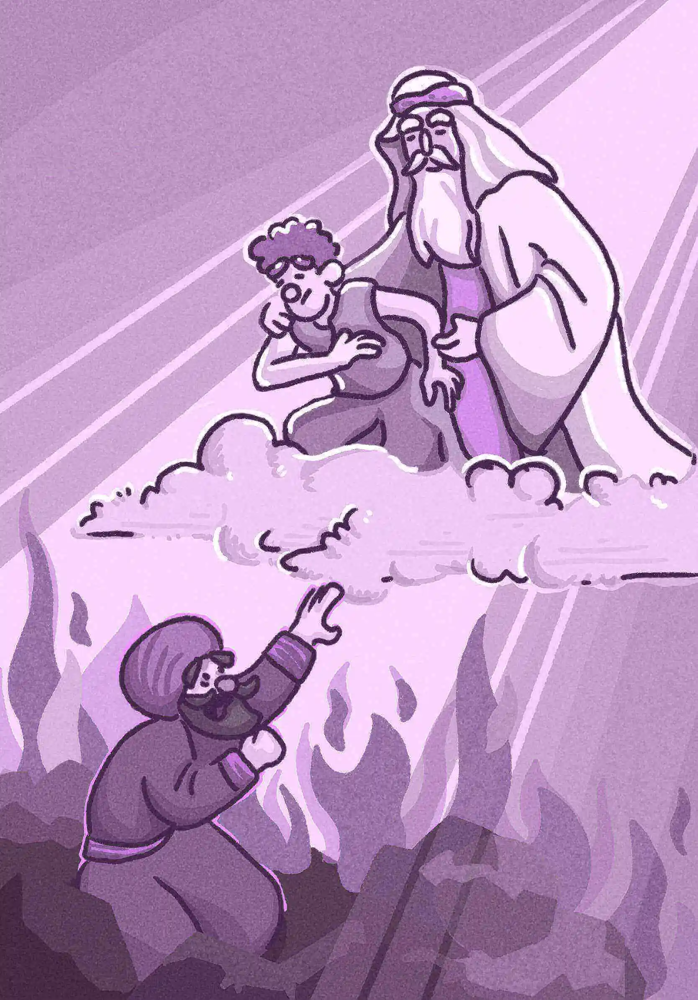

第4章 從來都沒有看到過
有一個財主穿著紫色袍和細麻布衣服，天天奢華宴樂。
又有一個討飯的，名叫拉撒路，渾身生瘡，被人放在財主門口，要得財主桌子上掉下來的零碎充飢；並且狗來餂他的瘡。
後來那討飯的死了，被天使帶去放在亞伯拉罕的懷裡。
財主也死了，並且埋葬了。他在陰間受痛苦，舉目遠遠的望見亞伯拉罕，又望見拉撒路在他懷裡，就喊著說：「我祖亞伯拉罕哪，可憐我吧！打發拉撒路來，用指頭尖蘸點水，涼涼我的舌頭；因為我在這火焰裡，極其痛苦。」
亞伯拉罕說：「兒啊，你該回想你生前享過福，拉撒路也受過苦；如今他在這裡得安慰，你倒受痛苦。不但這樣，並且在你我之間，有深淵限定，以致人要從這邊過到你們那邊是不能的；要從那邊過到我們這邊也是不能的。」
財主說：「我祖啊！既是這樣，求你打發拉撒路到我父家去；因為我還有五個弟兄，他可以對他們作見證，免得他們也來到這痛苦的地方。」
亞伯拉罕說：「他們有摩西和先知的話可以聽從。」
他說：「我祖亞伯拉罕哪，不是的，若有一個從死裡復活的，到他們那裡去的，他們必要悔改。」
亞伯拉罕說：「若不聽從摩西和先知的話，就是有一個從死裡復活的，他們也是不聽勸。」
── 路加福音16:19~31

「啪！」眼前一黑，伴隨熟悉的天旋地轉與太陽穴陣陣灼燒感，身體彷彿被強力磁石猛地吸向前，倏地又鬆開，失重墜落。
「又來了，又來了。」我心裡暗自嘀咕，雖然物理沒學好，但這樣迅速下墜，即便身為穿越主角，怕是不死也重傷。
「噗！」正當犯愁之際，一雙溫柔的大掌穩穩將我接住。
下意識揉揉雙眼，一手扶著救命恩人的衣袖，掙扎著坐起。
四處都是明晃晃的亮光，溫暖而不刺眼，半瞇著的雙眸漸漸適應，剛要起身，爆棚的資訊量突襲式灌進腦海，一陣眩暈，又倒在救命恩人懷裡。掙扎著抬起頭，卻一臉撞進救命恩人亂蓬蓬的大鬍子裡。
「我＃＆※⋯⋯。」我想開口說點什麼，卻噴出一嘴的鬍鬚。
「別怕，拉撒路。你在這裡很安全。」他眉眼帶笑，又深又窄的皺紋裡有細細的溫柔。
嗯，對，我好像叫拉撒路。用手拍了拍前額，試圖讓自己保持清醒。這才注意到瘦骨嶙峋的自己，額頭被手骨敲得吃痛。
救命恩人看著陌生，但那張慈祥的臉龐卻有著說不出的熟悉。這時，我才有時間環顧四周，心想：「那這又是哪裡？」
「我是亞伯拉罕，你的祖先。這裡是天堂，你會一直跟我在一起，噢，還有上帝⋯⋯。」救命恩人彷彿看穿我的心思，開始自動導覽。
「什麼？天堂？亞伯拉罕？」這次穿越也太扯了吧，甘那咧喊冥（台語）。
我暗自吃驚，來不及細想，便被遠處的慘叫聲吸引。
遠遠一個身穿紫袍和麻布衣的中年男子，不住哀號，一會跌地翻滾，一會全身顫抖，形容扭曲。他猛地抬頭，像是望見了我和亞伯拉罕，發狂似、連滾帶爬向我們趕來。
然而，每當他即將伸手觸及亞伯拉罕的衣袖，我們與他之間的距離又瞬間拉遠，像薛西弗斯的神話一般，無窮止盡。
「這是？」我詫異地轉向亞伯拉罕。
「他是你們家那一帶有名的財主，你忘了嗎？他現在身處地獄，無法靠近我們，我們也無法觸碰到他。」亞伯拉罕平靜地說。
「財主嗎？」我仔細搜尋腦海深處，想找回失落的記憶，手腳上那些爛瘡傷口竟開始隱隱作痛。
「等等，你說他在地獄？可是⋯⋯」
「你覺得他看起來與我們沒有什麼不同，對嗎？拉撒路，天堂與地獄的差別或許與你的想像有一段落差，對我們來說，天堂就是有神同在的地方，而他⋯⋯。」
「救命啊，我的先祖亞伯拉罕！」一聲淒厲的叫喊打斷了亞伯拉罕的話。
「那是拉撒路嗎？亞伯拉罕，可憐可憐我吧。地獄的火燄太燙了，我好難受，可以叫拉撒路過來弄點水給我嗎？我全身上下的水分都快蒸發了。喂！拉撒路！以前你在我家門口乞討也得了不少好處吧，過來給我點水喝也不為過！」財主直勾勾地看著我，像鬣狗鎖定了獵物。
我渾身起雞皮疙瘩，過往的淒慘落魄在眼前浮現，忍不住打了一個哆嗦。財主看著我的神情就像他家那頭看門犬，那樣追趕跑跳的日子我可不敢再想了。然而，之前穿越成財主的畫面忽然閃現，那些被我趕走的窮苦人家頓時在眼前鮮明了起來，此時異位而處才知道，原來當時被我低看的人是這樣的感受，真是慚愧！
「孩子，別怕。」亞伯拉罕將手輕放在我的肩頭，四周的空氣漸漸安靜而穩定。
「你啊，還不明白嗎？你是到不了我們這裡的，同樣，我們也過不去。」亞伯拉罕對著遠處的財主朗聲說道，接著頓了一頓，又說：「回去吧！以前你享盡榮華富貴，對於拉撒路不屑一顧，怎麼，今日倒惦念起他的好處來了。以前拉撒路怎樣受委屈，現在在天堂，他也要照樣得著安慰。你受這火燄多日，還看不清地獄和天堂的差別嗎？」
財主忿忿不平，臉上閃過不可思議的神色，激動地說：「可是⋯⋯ 我也是好人啊，我以前雖然賺得多，卻也常周濟窮困的人，摩西律法交代的那些我哪一項沒有完成？幫我說句話啊，拉撒路，我有對你不屑一顧嗎？今年的普珥日[1]你難道沒有從我家的筵席中吃到食物嗎？地方上都說我是大善人，憑什麼我就要在地獄呢？」
直接被點名，我愣愣地欲言又止。沒錯，今年的普珥日我確實在財主家度過，也得到了難得一天的飽足，可是還是哪裡不對勁。筵席上大家看我的眼神，還有平常他們看我的眼神⋯⋯ 啊，其實他們並沒有看我，從來都沒有看到過。
想起那些眼神與旁人地閒言碎語，我不禁打了個寒顫。
在我開口之前，亞伯拉罕搶先嚴肅的出聲：「那就是你的善嗎？那就是你所謂的守律法與對人的接待嗎？贏得名聲與被人看見嗎？那你有看見過拉撒路嗎？什麼是愛呢？」
聞言財主緊繃的臉龐頓時鬆垮下來，頹然靜默，灰暗暗地垂著頭。
「那，那現在還來得及嗎？」過了半晌，他幽怯地開口，語音顫抖，神色中閃過一絲不安：「亞伯拉罕，我的先祖，我、我還來得及告訴家人這一切嗎？我知道，我知道我與你們的道路已不相同，能求您差遣拉撒路，對、對就是拉撒路，能讓他去向我的家人們傳個信嗎？我家中還有五個弟兄，我希望他們能走你們的道路。」財主瞄眼向我，眼底盡是懇求。
「主的命令難道還不夠清楚嗎？就像你所說的，我想你以前也沒少讀過先知和摩西的訓示吧？」亞伯拉罕淡淡地望著財主。
「不是的，不是的，我只是想若、若拉撒路能去，看見這樣一個活樣板，他們以前再怎麼不明白，這下肯定都會信的。」財主的聲音透著心虛，越說越低。
「你一直都知道的，不是嗎？即便拉撒路去了，連上主的話都不瞧一眼的人，又怎麼會因此輕易回改呢？」
亞伯拉罕的話音稍落，伴隨著財主由近而遠的啜泣聲，迴盪在這亮晃晃的空間。
在這天堂與地獄相差幾希的空間裡，我緊緊拽著亞伯拉罕的手，掌心傳來安穩有力的溫熱，心底也跟著沉澱平靜。
註解：
[1] 普珥日：猶太人的傳統節日，為紀念和慶祝古代流落波斯帝國的猶太人從滅種的毀滅中倖存。在這日，猶太人會設筵歡樂，彼此餽送禮物，賙濟窮人。（以斯帖記8:20~32）
問題與討論：
-
敘事焦點雖然並非在世的場景，但卻指出拉撒路在世時的景況，你可以試著想像並描述拉撒路在活著時候他的內心世界嗎？
-
你認為拉撒路所遭遇到最大的問題是什麼？
-
現代版的拉撒路仍然在社會各角落，說說有哪些弱者、貧窮人、有需要的人，等待我們去與他們建立關係，去「看見」他們？我們可以做什麼？